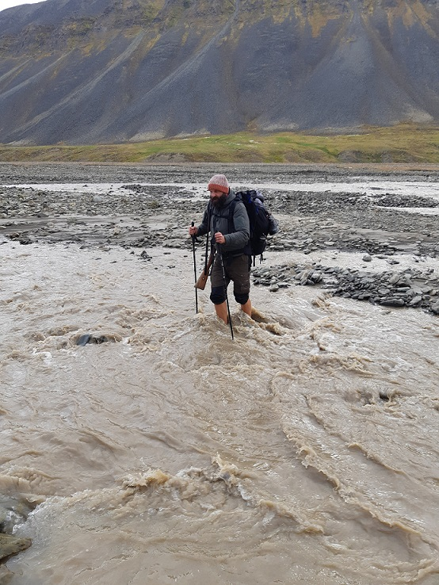

01
Pirma dalis
Be šautuvo išeiti už miesto draudžiama
Rugpjūčio mėnesį skaitant naujienas sukrėtė žinia, atskriejusi iš Svalbardo salyno - baltoji meška užpuolė ir mirtinai sužalojo žmogų. O juk tik prieš keletą dienų su bičiuliu patys buvome iš ten parskridę. Apie tai, ką pasaulio pakrašty pamatėme, ką išgirdome, ko bijojome ir kaip nugalėjome save, aprašysiu trumpoje straipsnių serijoje.


02
Antra dalis
Žygis per tundrą
Pirmajame straipsnyje buvo trumpai apžvelgtas Svalbardas, aprašyti Longjyrbieno ir Barencburgo miesteliai, o šįkart papasakosiu apie mano ir Konstantino žygį pėsčiomis tarp šių gyvenviečių. Trys dienos ir 60 kilometrų per baltųjų meškų žemes. Ko gero bus šiek tiek daugiau emocijų ir mažiau faktų, bet tikiu, kad skaitytojas galės pajusti, ką reiškia žygiuoti per tundrą, kirsti ledines upes, nuolat dairytis baltųjų meškų. Patyrę keliautojai galbūt atlaidžiai nusišypsos, o žmonės, niekada nebuvę arktyje, patys užsinorės leistis į nuotykius.
03
Trečia dalis
Apleistas Piramidės miestas
Po praeitame straipsnyje aprašytos kelionės pėsčiomis per baltųjų lokių žemes labiausiai norėjosi poilsio, bet pagal mūsų planą dar turime aplankyti keletą objektų pačiame Longjyrbiene, o taip pat nuplaukti į buvusį Sovietų Sąjungos pasididžiavimą, dabar praktiškai apleistą Piramidės miestą. Apie tai, o be to ir apie sutikto naujo bičiulio gyvai pamatytą trilerį ir papasakosiu šiame, jau paskutiniame, straipsnyje iš šiaurės.